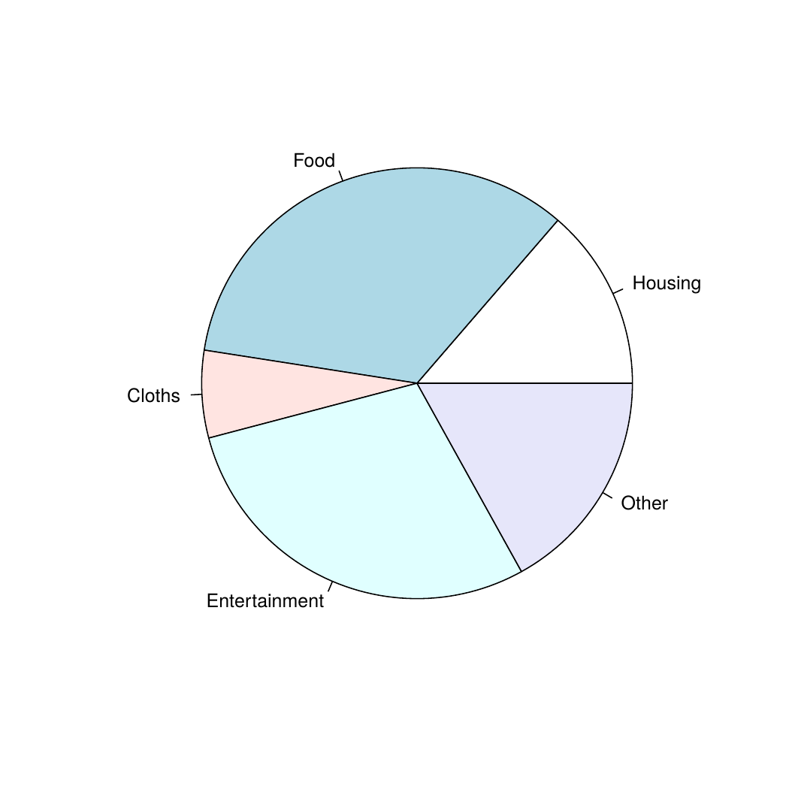

Pie chart is drawn using the pie() function in R programming . This function takes in a vector of non-negative numbers.
Pie charts are not recommended in the R documentation, and their features are somewhat limited. The authors recommend bar or dot plots over pie charts because people are able to judge length more accurately than volume.
The basic syntax for creating a pie-chart using the R is −
pie(x, labels, radius, main, col, clockwise)
Following is the description of the parameters used −
x is a vector containing the numeric values used in the pie chart.
labels is used to give description to the slices.
radius indicates the radius of the circle of the pie chart.(value between −1 and +1).
main indicates the title of the chart.
col indicates the color palette.
clockwise is a logical value indicating if the slices are drawn clockwise or anti clockwise.
# Create data for the graph.
x <- c(25, 62, 12, 53,31)
labels <- c("Housing","Food","Cloths","Entertainment","Other")
# Give the chart file a name.
png(file = "city.jpg")
# Plot the chart.
pie(x,labels)
# Save the file.
dev.off()
Result −
# Create data for the graph.
#the argument clockwise=TRUE to draw the chart in clockwise fashion.
x <- c(25, 62, 12, 53,31)
labels <- c("Housing","Food","Cloths","Entertainment","Other")
# Plot the chart with title and rainbow color pallet.
pie(x, labels, main = "Expenditure pie chart",
col=c("red","orange","yellow","blue","green"),
border="brown",
clockwise=TRUE)
Result -Slice Percentages and Chart Legend
# Pie Chart with Percentages
x <- c(25, 62, 12, 53,31)
lbls <- c("Housing","Food","Cloths","Entertainment","Other")
pct <- round(x/sum(x)*100)
lbls <- paste(lbls, pct) # add percents to labels
lbls <- paste(lbls,"%",sep="") # ad % to labels
pie(x,labels = lbls, col=rainbow(length(lbls)),
main="Pie Chart of Countries",border="brown",)
#legend
legend("topright",
c("Housing","Food","Cloths","Entertainment","Other"),
cex = 0.8,fill = rainbow(length(x)))
Result -
The package plotrix has a function called pie3D() which provides 3D exploded pie charts.
# 3D Exploded Pie Chart
library(plotrix)
x <- c(25, 62, 12, 53,31)
lbls <- c("Housing","Food","Cloths","Entertainment","Other")
pie3D(x,labels=lbls,explode=0.1,
main="Pie Chart of Expenditure ")
Result -